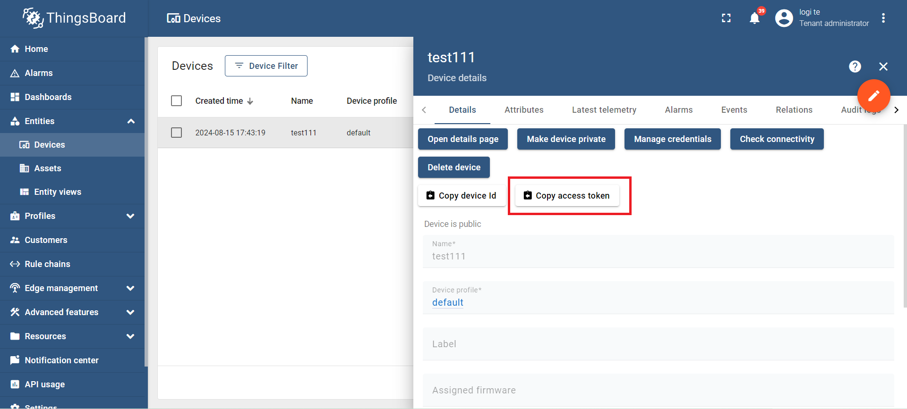

ข้อตกลงผู้อ่าน
***ข้อมูลจากบล็อกนี้จัดทำเมื่อวันที่ 10/09/2567***
ThingsBoard IoT Platform
ThingsBoard เป็นแพลตฟอร์ม Internet of Things (IoT) แบบโอเพนซอร์ส ซึ่งถูกออกแบบมาเพื่อจัดการและพัฒนาโซลูชัน IoT อย่างครอบคลุม มันช่วยให้ผู้ใช้งานสามารถจัดการอุปกรณ์ IoT (IoT devices) เก็บข้อมูลที่รวบรวมจากอุปกรณ์เหล่านั้น รวมถึงการแสดงผลข้อมูลและการควบคุมอุปกรณ์ได้ในเวลาเดียวกัน

ฟีเจอร์หลักของ ThingsBoard ได้แก่:
- การจัดการอุปกรณ์ (Device Management): ผู้ใช้สามารถเพิ่มอุปกรณ์ IoT จำนวนมากได้อย่างง่ายดาย และสามารถจัดการอุปกรณ์แต่ละตัว เช่น การตั้งค่า การอัปเดตซอฟต์แวร์ การเก็บข้อมูลสถานะ และข้อมูลต่างๆ ที่อุปกรณ์ส่งมา
- การเก็บและประมวลผลข้อมูล (Data Collection & Processing): ThingsBoard สามารถรวบรวมข้อมูลจากอุปกรณ์ IoT และทำการประมวลผลข้อมูลด้วยกฎ (Rule Engine) เพื่อดำเนินการต่างๆ เช่น การส่งข้อมูลไปยังปลายทางอื่น การแจ้งเตือน หรือการดำเนินการบางอย่างตามเงื่อนไขที่กำหนด
- การสร้างแดชบอร์ด (Dashboard): มีระบบแดชบอร์ดที่สามารถแสดงข้อมูลที่ถูกเก็บมาจากอุปกรณ์ ในรูปแบบกราฟหรือแผนภาพต่างๆ ซึ่งช่วยให้ผู้ใช้งานสามารถวิเคราะห์ข้อมูลได้อย่างรวดเร็วและมีประสิทธิภาพ
- การแจ้งเตือน (Alarming): เมื่อมีเหตุการณ์ที่ไม่ปกติเกิดขึ้น เช่น อุปกรณ์หยุดทำงาน หรือค่าที่ส่งมาผิดปกติ สามารถกำหนดการแจ้งเตือนไปยังผู้ใช้งานหรือส่งการแจ้งเตือนไปยังระบบอื่นๆ ได้
- การควบคุมอุปกรณ์ระยะไกล (Remote Control): ผู้ใช้สามารถควบคุมอุปกรณ์ต่างๆ จากระยะไกลผ่านแพลตฟอร์ม เช่น การเปิด/ปิดเครื่อง การเปลี่ยนการตั้งค่า หรือการตรวจสอบสถานะของอุปกรณ์
- การขยายระบบ (Scalability): ThingsBoard ออกแบบมาเพื่อรองรับการขยายระบบให้สามารถจัดการอุปกรณ์จำนวนมากขึ้น หรือการประมวลผลข้อมูลที่มากขึ้นอย่างมีประสิทธิภาพ
- รองรับโปรโตคอลหลายชนิด (Multi-protocol Support): ThingsBoard รองรับโปรโตคอลต่างๆ เช่น MQTT, CoAP และ HTTP ซึ่งช่วยให้สามารถเชื่อมต่อกับอุปกรณ์ IoT หลากหลายประเภทได้
Mission 1/4: ส่งข้อมูลค่า Humidity และ Temperature จากเซ็นเซอร์ DHT-22 ไปยัง Dashboard ของ ThingsBoard
- เข้าสู่ระบบที่เว็บไซต์ Live Demo ของ ThingsBoard: https://demo.thingsboard.io
- เมื่อเข้ามาที่หน้า Main ของ ThingsBoard ให้เลือก "Device" ในส่วนของ Device Management เพื่อสร้างอุปกรณ์ใหม่
- จะปรากฏอุปกรณ์ใหม่ชื่อว่า "PkTest1234" ที่หน้า Device → คลิกที่อุปกรณ์นี้ แล้วเลือกคัดลอก Access Token Code 
การติดตั้ง Arduino Library
- Add Library “ThingsBoard by ThingsBoard Team -- V 0.4.0”
- Add Library “ArduinoHttpClient by Arduino -- V 0.4.0”
- Add Library “ArduinoJson by Benoit Blanchon – V6.18.0”
ทดสอบโปรแกรม
#include "ThingsBoard.h"
#include
#define WIFI_AP "Test1234"
#define WIFI_PASSWORD "MaiMeeJingJing"
#define TOKEN "fm6EwZ1L9tZrSV1f06pM"
#define THINGSBOARD_SERVER "demo.thingsboard.io"
#define SERIAL_DEBUG_BAUD 115200
WiFiClient espClient;
ThingsBoard tb(espClient);
int status = WL_IDLE_STATUS;
void setup() {
Serial.begin(SERIAL_DEBUG_BAUD);
WiFi.begin(WIFI_AP, WIFI_PASSWORD);
InitWiFi();
}
void loop() {
if (WiFi.status() != WL_CONNECTED) {
reconnect();
}
if (!tb.connected()) {
Serial.print("Connecting to: ");
Serial.print(THINGSBOARD_SERVER);
Serial.print(" with token ");
Serial.println(TOKEN);
if (!tb.connect(THINGSBOARD_SERVER, TOKEN)) {
Serial.println("Failed to connect");
return;
}
}
Serial.print("Sending data...");
float xTempp = random(00, 50);
float xHdmid = random(51, 99);
Serial.print(xTempp, 2);
Serial.print(",");
Serial.print(xHdmid, 2);
Serial.println();
tb.sendTelemetryFloat("temperature", xTempp);
tb.sendTelemetryFloat("humidity", xHdmid);
tb.loop();
delay(5000);
}
void InitWiFi() {
Serial.println("Connecting to AP ...");
WiFi.begin(WIFI_AP, WIFI_PASSWORD);
while (WiFi.status() != WL_CONNECTED) {
delay(500);
Serial.print(".");
}
Serial.println("Connected to AP");
}
void reconnect() {
status = WiFi.status();
if (status != WL_CONNECTED) {
WiFi.begin(WIFI_AP, WIFI_PASSWORD);
while (WiFi.status() != WL_CONNECTED) {
delay(500);
Serial.print(".");
}
Serial.println("Connected to AP");
}
}
แสดงข้อมูลบน Dashboard
- กลับมาที่หน้า Device ของ ThingsBoard ให้เลือก "Latest Telemetry" จะปรากฏข้อมูลที่ส่งเข้ามา
- เลือกข้อมูล humidity แล้วเลือก "Show on Widget" → เลือกใช้ "Analogue Gauges" → เพิ่มไปยัง Dashboard
- ทำซ้ำกับตัวแปร humidity
ปรับแก้ไข Dashboard
ปรับแก้ไข Dashboard ให้ตรงกับรูปแบบที่ต้องการ และมีข้อสังเกตดังนี้:
- ค่า Analog Gauge ต้องอยู่ระหว่าง 0-100
- ค่า Digital Gauge ต้องอยู่ระหว่าง 0-100
ผลลัพธ์ดังรูป